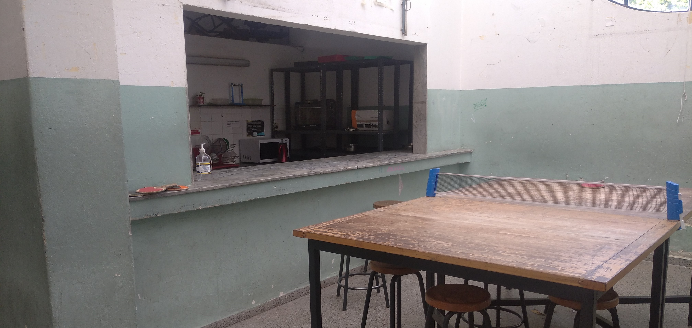

Comprender los fundamentos científicos - tecnológicos de los procesos productivos, relacionando la teoría con la práctica de diversas áreas de saber, con vistas al ejercicio de ciudadanía y la preparación para el trabajo. • Buscar, seleccionar, interpretar y comunicar información científico - tecnico - tecnológica referida al área de formación específica. • Aplicar medidas de protección ambiental valorando la dualidad beneficio - perjuicio del desarrollo científico - técnico - tecnológico. • Desarrollar actitud ética, autonomía intelectual y pensamiento crítico. • Comprender el entorno social, económico, cultural y ambiental en el que viven.
Poseer destrezas y habilidades operatívas, conocimientos técnicos - tecnológicos - científicos - culturales, que lo habilitan a enfrentar bajo supervisión, situaciones propias de su nivel tales como: • Identificar los problemas de IT y Redes y asignarles prioridad, de acuerdo a los criterios definidos. Atender en forma remota aquellas incidencias que no requieren más de cinco minutos para su resolución: • Asignar las incidencias a los grupos de resolución. • Realizar el seguimiento de la incidencia hasta su resolución para poder informar al usuario el estado de la misma. • Confirmar la satisfacción del usuario con respecto a la solución brindada. Realizar estadísticas de las incidencias: por grupos de resolucion, tiempos de resolucionución, usuarios, etc. • Ejecutar planes de contingencia en aquellos casos en los que el responsable del servicio lo indique. • Contribuír al control de la base de datos de los usuarios. • Elevar reportes periódicos de la actividad realizada al responsable del servicio. Realizar la atención a los usuarios de tecnología informática que: • Interrumpen la normal operatoria del trabajo • Requieran soporte sobre el hardware y/o software instalado • Requieran nuevos productos de hardware y/o software • Generen consultas y/o asesoramiento en el funcionamiento y/o utilización de los recursos informáticos disponibles